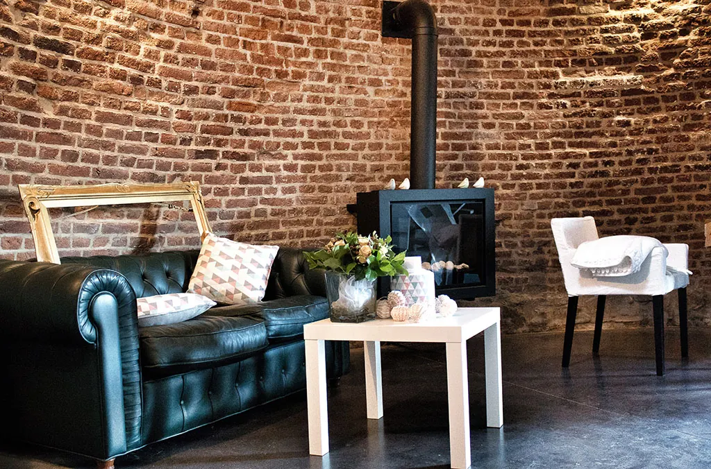
0Rez-de-chaussée
Les espaces à vivre
Salon, coin repas, cuisine et WC. Le salon s'ouvre sur un mur de briques et un feu ; la cuisine monte vers l'étage par un escalier en colimaçon.
Gîte insolite · Houdeng-Aimeries
Un moulin en briques de 1865, rénové pendant trois ans par ses propriétaires : trois niveaux en loft pour 2 à 4 personnes, un sauna au bois dans l'annexe et un grand jardin, aux portes de Mons.
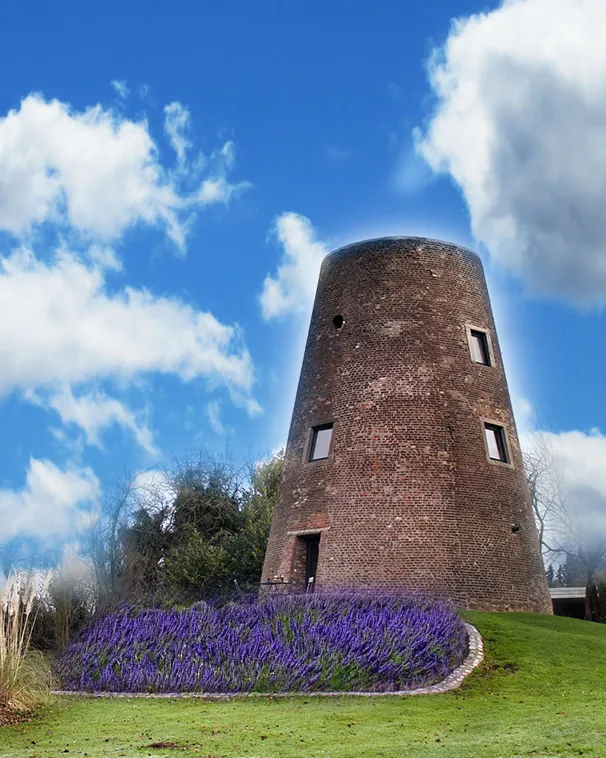
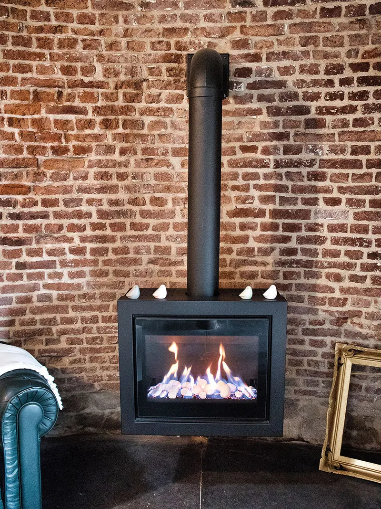
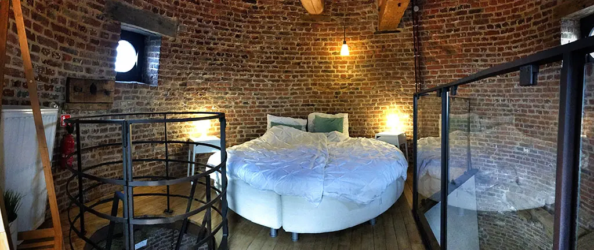
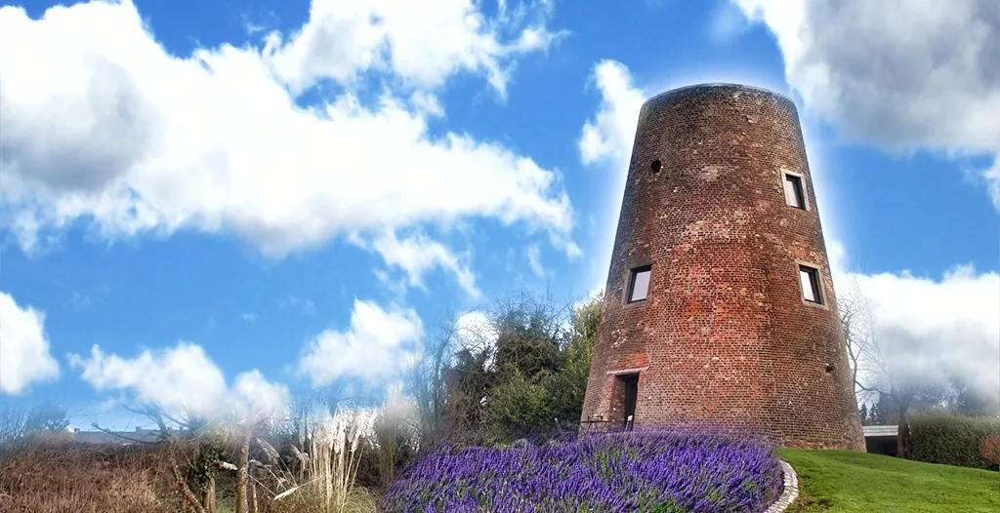
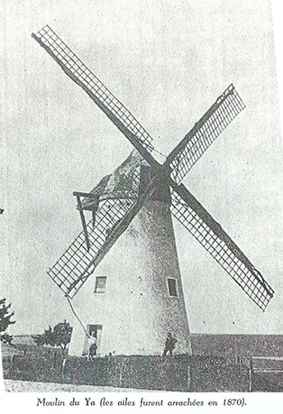
Le moulin
En 2014, Frédérique et Christophe se sont lancés dans la rénovation totale d'un bâtiment qui avait cessé de vivre entre 1886 et 1914. Environ 3 000 heures de travaux, de gros coups de main de proches et l'aide d'artisans : menuisier, ébéniste, maçon, ferronnier.
Le résultat : un moulin à vent construit au 19e siècle (1865), devenu leur gîte insolite.
« Nous sommes parvenus à rendre vie à cette bâtisse devenue notre gîte insolite. »
Le gîte
Un aménagement de type loft, soigneusement décoré. Le Wi-Fi est disponible et une télévision est présente dans le coin salon.

0Salon, coin repas, cuisine et WC. Le salon s'ouvre sur un mur de briques et un feu ; la cuisine monte vers l'étage par un escalier en colimaçon.
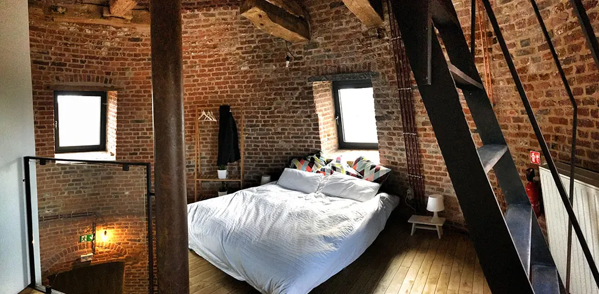
1La première chambre et la salle d'eau, avec douche et lavabo.
Tout en haut du moulin, sous les briques. « Les lits se trouvent au premier et au deuxième étage », note une voyageuse : l'intimité y est limitée.
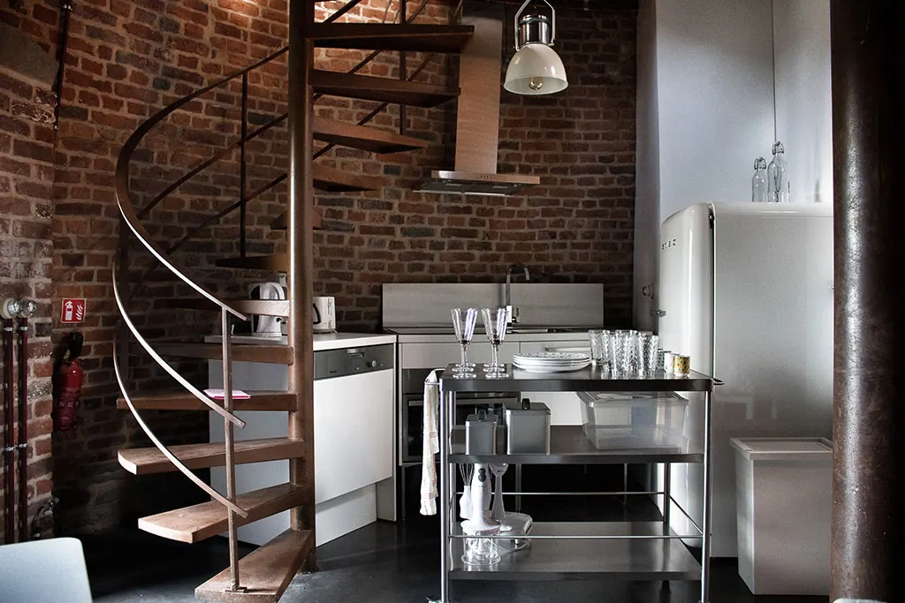
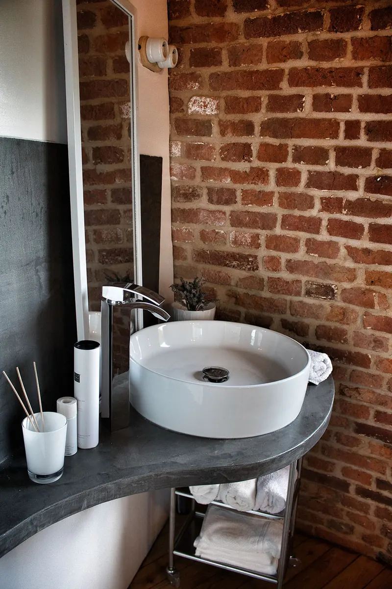
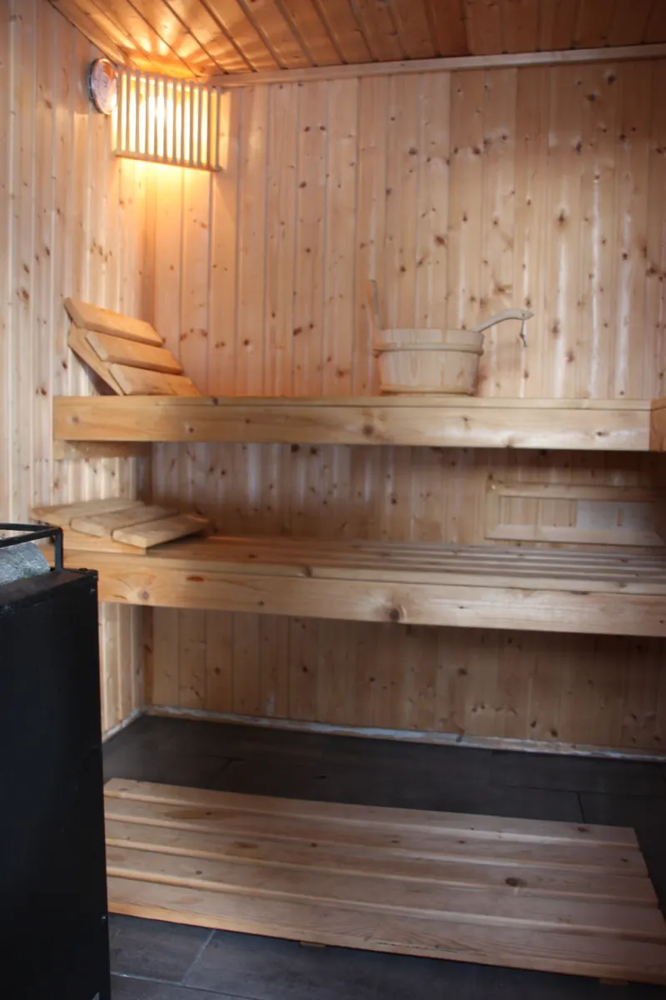
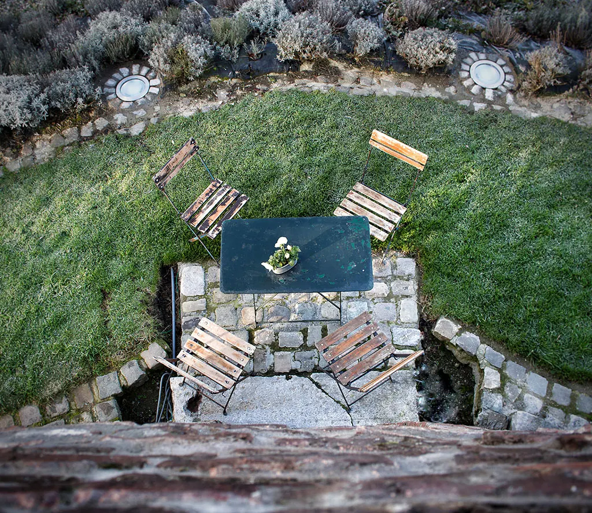
Sauna et jardin
Un sauna au bois est disponible dans une annexe, face au moulin. Il s'utilise sur rendez-vous, pour 25 €. Dehors, de la place pour s'asseoir, lire et laisser courir le chien : un voyageur a trouvé que son chien « a pu s'y dépenser sans compter ».
Le tarif
Réservation de deux nuits minimum. Le moulin se loue le week-end, du vendredi au dimanche, ou la semaine, du lundi au vendredi. Toute autre durée est possible sur demande.
Draps, essuies, linge de maison et nettoyage final compris. Arrivée possible dès 17 h.
Sauna au bois, dans l'annexe face au moulin.
Autre durée : sur demande.
Frédérique et Christophe confirment les dates et les modalités par retour.
Réserver
Choisissez l'arrivée et le départ, dites combien vous serez : Frédérique et Christophe vous répondent avec la disponibilité et les modalités.
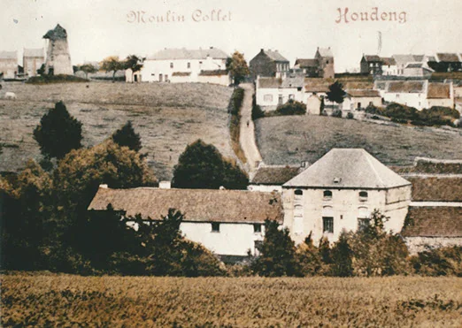
Son histoire
Le site est celui de l'ancien « moulin Collet », qui a fonctionné jusqu'à la fin des années 1980 : un moulin à eau où l'on produisait de la chicorée, et une grange. Au sommet se trouvait le moulin à vent, construit en 1865, en briques, qui dominait le vallon. Les deux moulins travaillaient en complémentarité : l'un tournait quand l'autre s'arrêtait, faute d'eau ou de vent.
Son premier propriétaire fut François Blondiau, meunier, à qui succéda Athanase Ghilain, dit le « Ya ». Les ailes furent arrachées par une violente tempête, puis le moulin perdit son toit. En 2003, Frédérique et Christophe, tombés sous le charme de l'endroit, font l'acquisition du site.
Autour du moulin
Le canal et ses ascenseurs, Mons, Pairi Daiza, les RAVeL : du moulin, on rayonne en voiture, à vélo ou à pied.
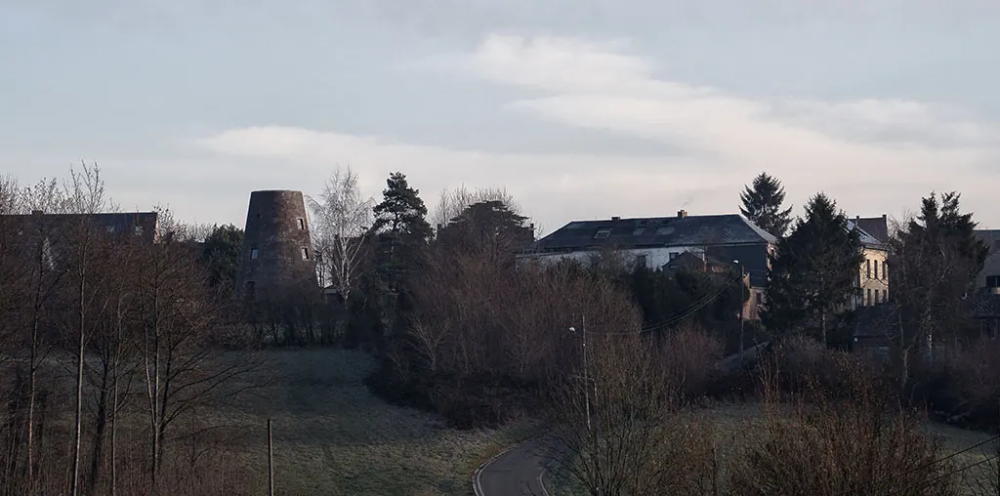
Ses ascenseurs à bateaux, classés au patrimoine mondial de l'Unesco, dont celui de Strépy-Thieu.
Site minier, patrimoine industriel de la région du Centre, et son écomusée.
Leurs célèbres Carnavals, classés patrimoine oral et immatériel de l'humanité par l'Unesco.
Son Doudou, ses rues pavées, sa Grand-Place et son Beffroi, et le plus grand centre commercial du Benelux.
Élu meilleur jardin zoologique et plus beau parc de Belgique et des Pays-Bas en 2016.
Le plan incliné de Ronquières et son festival de début août ; le festival de Dour à la mi-juillet.
Les châteaux d'Écaussinnes, de Seneffe et de Beloeil, de nombreuses promenades pédestres (le Roeulx, Gottignies…), les nombreux RAVeL de la région, les centres aquatiques de La Louvière, Mons et Marcinelle, et les Lacs de l'Eau d'Heure. Bruxelles est à 50 km, Paris à 250 km.
Nous rejoindre
Téléphone
0479 23 47 03Adresse
Frédérique et Christophe
Rue de Bignault 30
7110 Houdeng-Aimeries (La Louvière), Belgique
Arrivée
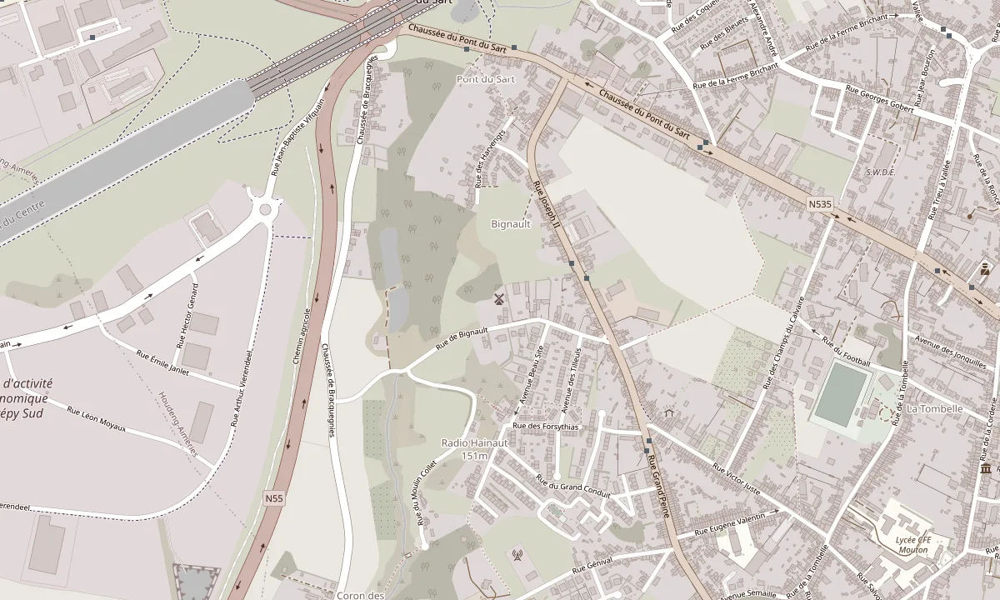
Itinéraire © OpenStreetMap